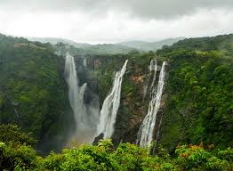

Karnataka is a state in southern India. Its capital is Bengaluru.
It is known for technology, Mysore Palace, coffee plantations, and beautiful temples.
Kannada is the official language of Karnataka.